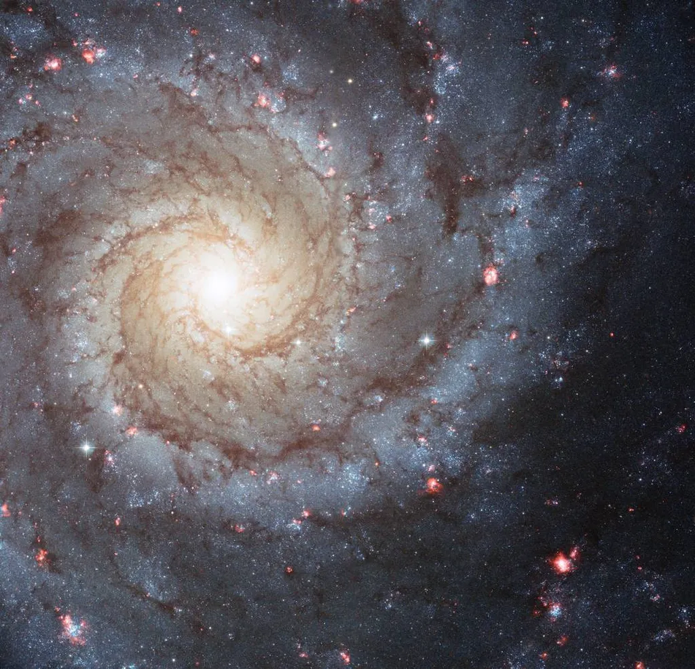
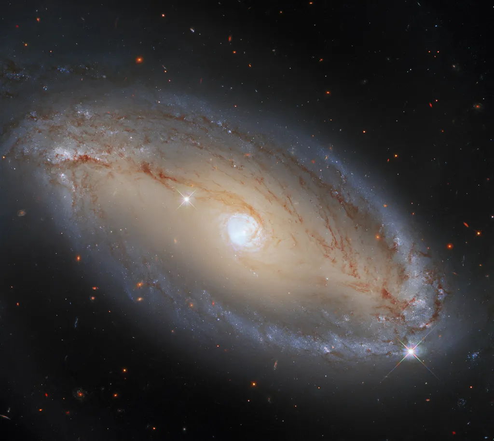
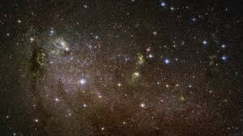
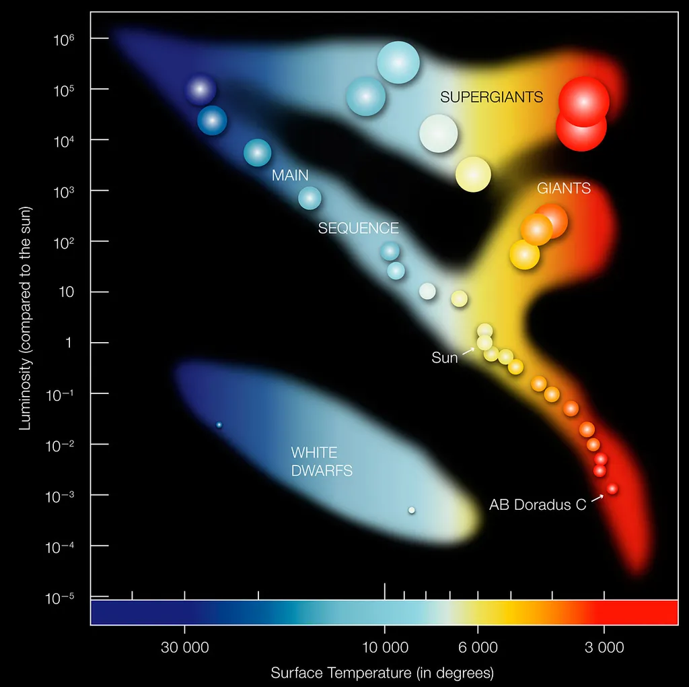

Galaxies are enormous systems of stars, planets, gas, dust, and dark matter, held together by gravity. The universe contains billions of galaxies, each with millions to trillions of stars.
Space between galaxies is not empty - it is filled with intergalactic matter which has very low density.
Spiral galaxies (such as the Milky Way) are the brightest, composed of white and blue stars. They look like rotating flat disks, with so-called “arms” - gas, dust and young stars in the form of a line curved around the centre. Spiral galaxies evolve into ellipticals as they get older.

Spiral Galaxy (source: NASA)
Elliptical galaxies range from spherical to elongated shapes. They are composed mostly of older stars and contain very little gas and dust, leading to little new star formation.

Elliptical Galaxy (source: NASA)
Irregular galaxies lack a defined shape. They often appear chaotic and are rich in gas and dust, with active star formation.

Irregular Galaxy (source: NASA)
Stars
Stars are spherical objects made out of matter in plasma state (gases heated to high enough temperatures that electrons are separated from the atoms, creating the mixture of ions and electrons - ionized gas). They shine because of thermonuclear fusion of hydrogen into helium in their core, which releases energy in the form of light.
Their life begins with the gravitational collapse of clouds of interstellar matter called nebulas, and ends with another gravitational collapse which happens when there is no more fuel left for thermonuclear reactions and creates a black hole.
Stars are classified by temperature and luminosity, which leads to the Hertzsprung-Russell diagram or H-R diagram.

Hertzsprung-Russell diagram
Most stars lie on the main sequence from bottom-right (cool and dim) to top-left (hot and bright). This is the stable phase where stars spend most of their lives. Giants and supergiants appear above the main sequence, while dwarfs are found below it.
Planetary Systems
A planetary system includes a star and all celestial bodies orbiting it. Our Solar System is a well-known example.
Dwarf Planets
Dwarf planets revolve around stars but haven’t cleared their orbits of other bodies, unlike true planets.
Natural Satellites
These are bodies (like moons) that orbit a planet within the same planetary system.
Small Solar System Bodies
These are objects that are not planets, dwarf planets, or natural satellites. They include comets and asteroids.
Comets
Comets are icy objects with a solid nucleus of rock, dust, and frozen gases. When near a star, they form glowing tails.
Asteroids
Asteroids are rocky bodies ranging in size. Their composition can be carbonaceous, silicate, or metallic.